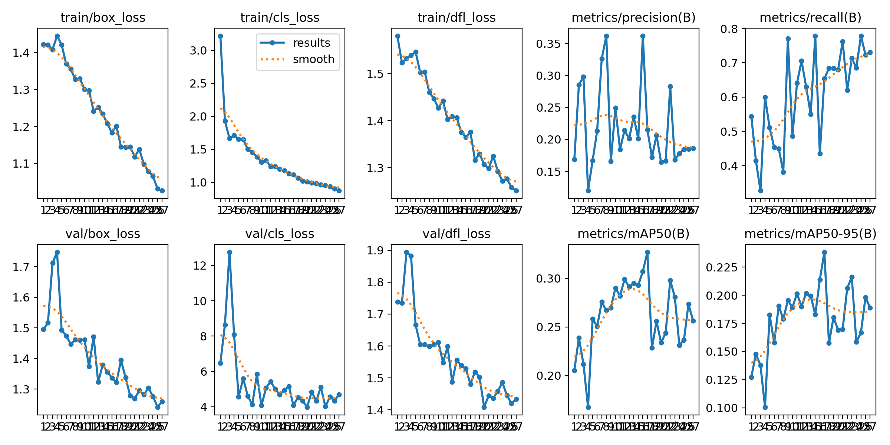
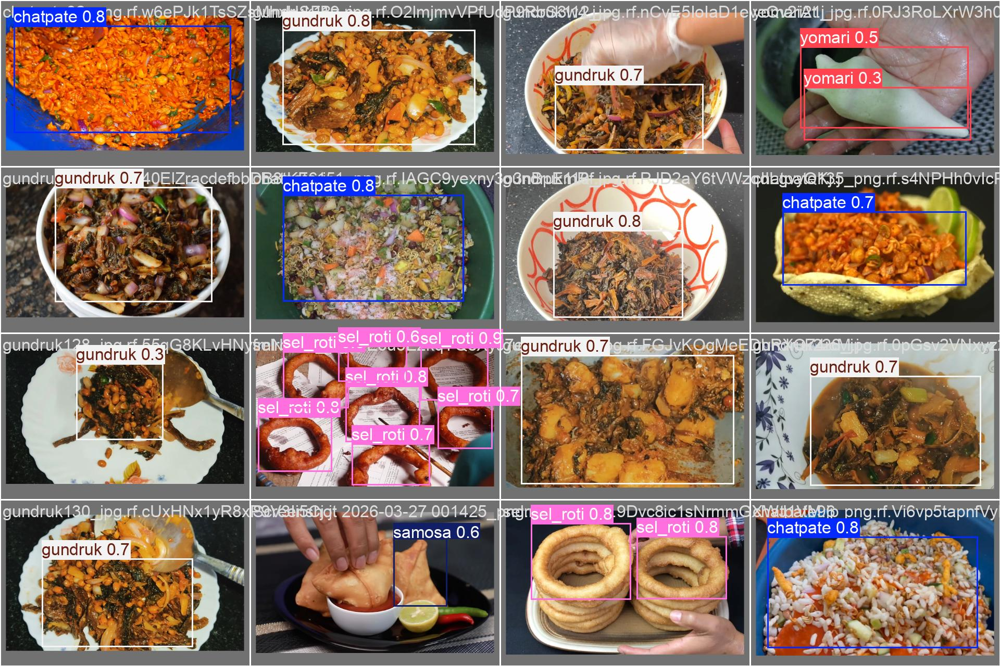
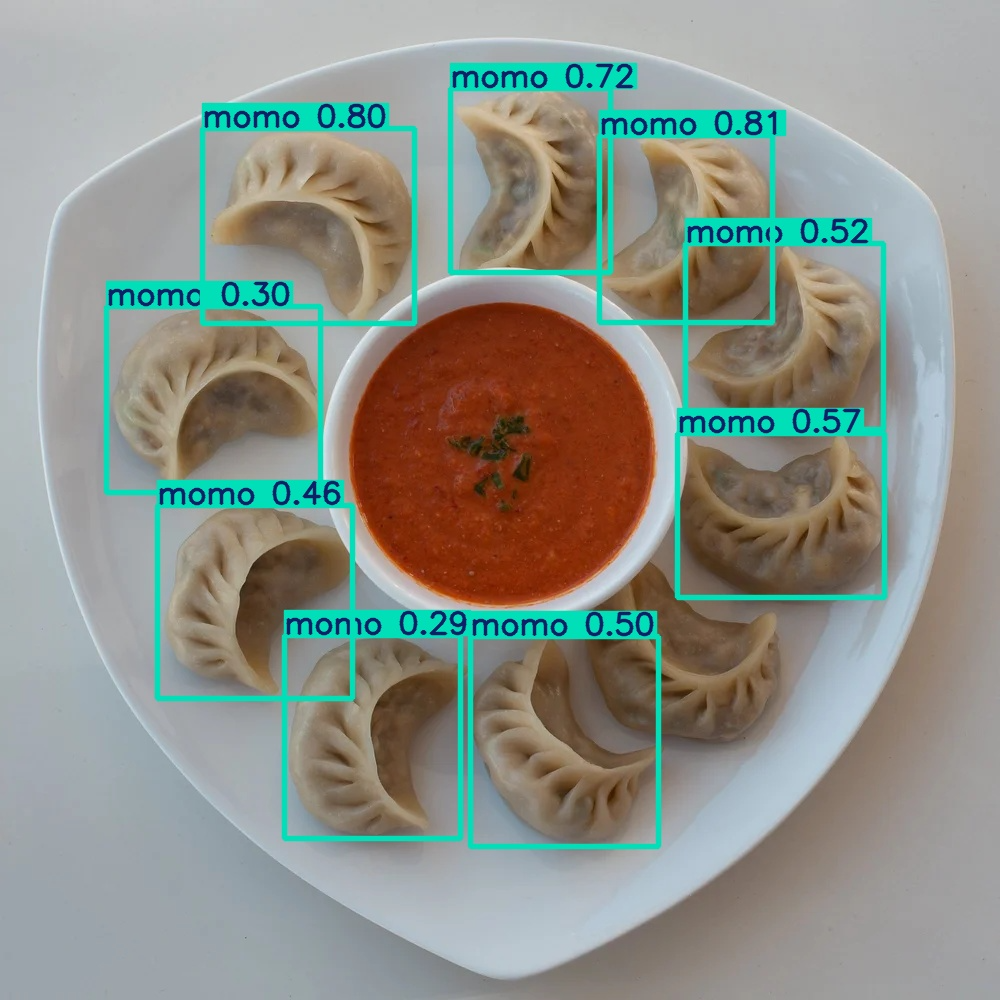
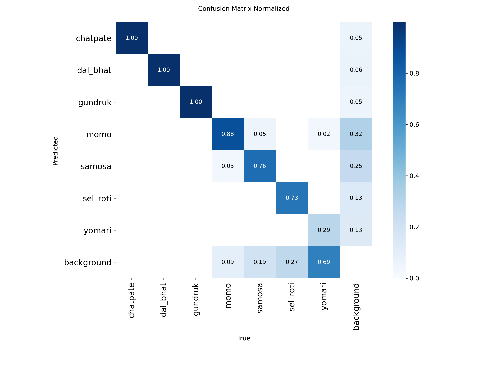
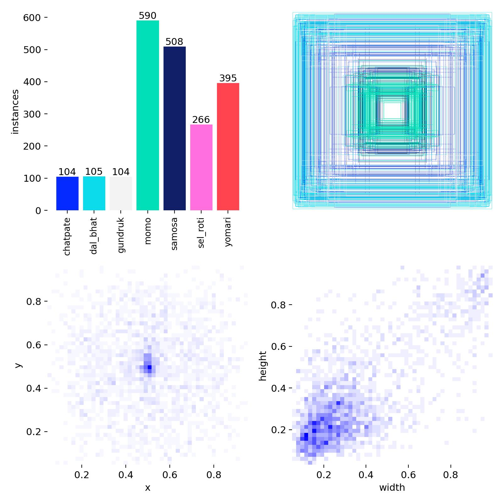

Nepali food detection with YOLOv8
A real-time object detection model fine-tuned to recognize traditional Nepali dishes Momo, Chatpate, Dal Bhat, Sel Roti, Samosa, and more from images and video.
// detections






// approach
Rather than training from scratch, both models started from ImageNet-pretrained YOLOv8 weights and were fine-tuned via transfer learning on a custom, YOLO-format-annotated dataset of Nepali food images. Two backbone sizes were trained and benchmarked head-to-head to explore the speed/accuracy trade-off:
// results — 27 epochs each
| Model | Params | Best epoch | mAP@50 | mAP@50-95 | Recall | Train time |
|---|---|---|---|---|---|---|
| YOLOv8n (nano) | ~3.2M | 15 | 29.4% | 20.1% | 60.1% | ~4.5 min |
| YOLOv8s (small) | ~11.2M | 17 | 32.7% | 23.8% | 65.3% | ~8.4 min |
YOLOv8s came out ahead on every accuracy metric — a +3.3pp gain in mAP@50 over the nano variant — at roughly double the training time. That trade-off maps directly onto the two real deployment targets: YOLOv8n for edge or mobile inference, YOLOv8s where compute is less constrained and accuracy matters more.
// pipeline
- Data: a Kaggle-sourced Nepali food image dataset, annotated in YOLO's normalized bounding-box label format and split into train/val/test.
- Training: both variants trained for 27 epochs via the Ultralytics CLI and Python API, with per-epoch loss and mAP logged to CSV.
- Inference: the best checkpoint from each run detects and labels food items in new images with a confidence score, using a configurable confidence threshold.